Attentive care
We put animal wellbeing first with attentive, consistent care.
CARE THAT COUNTSHealthy cattle. Quality feeding.
Responsible farming.
Thoughtful cattle care and dependable farming, rooted in the heart of Kiambu County.
Welcome to Cattle County Farm, a cattle-fattening farm located in Kiambu County.
We are committed to raising strong, healthy cattle through proper nutrition, attentive care, and responsible farming practices. Our goal is to provide dependable, well-raised cattle while building lasting trust with our customers and community.
See how we care for our cattleQuality cattle come from getting the everyday things right. We bring care, good nutrition, and responsible management together on our farm.
We put animal wellbeing first with attentive, consistent care.
CARE THAT COUNTSProper nutrition and clean water support healthy cattle and growth.
NOURISH TO GROWThoughtful livestock management guides how we work each day.
ROOTED IN RESPONSIBILITY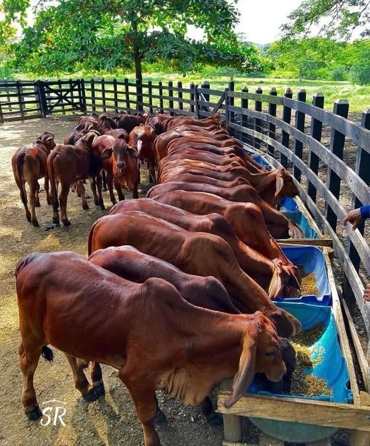
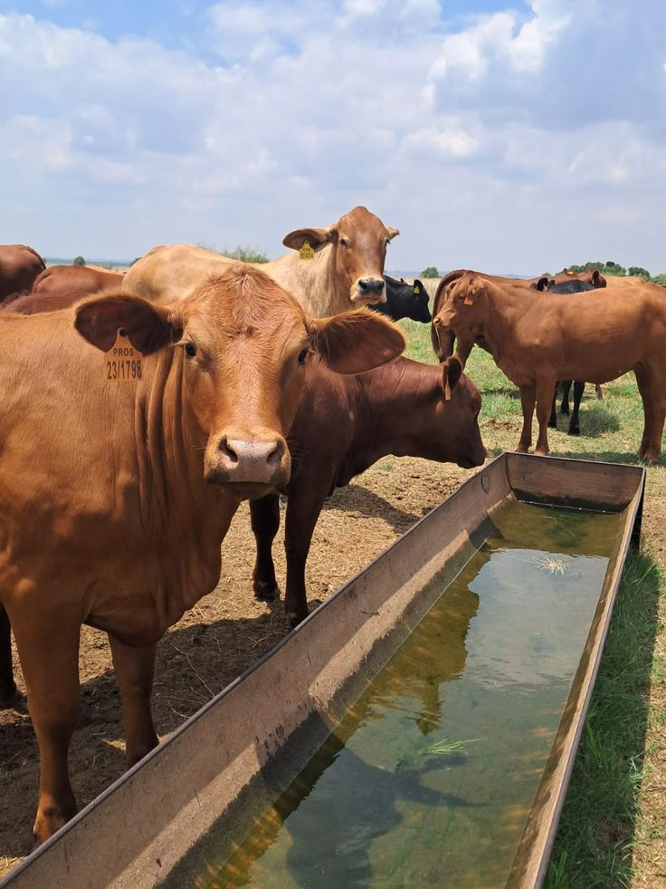
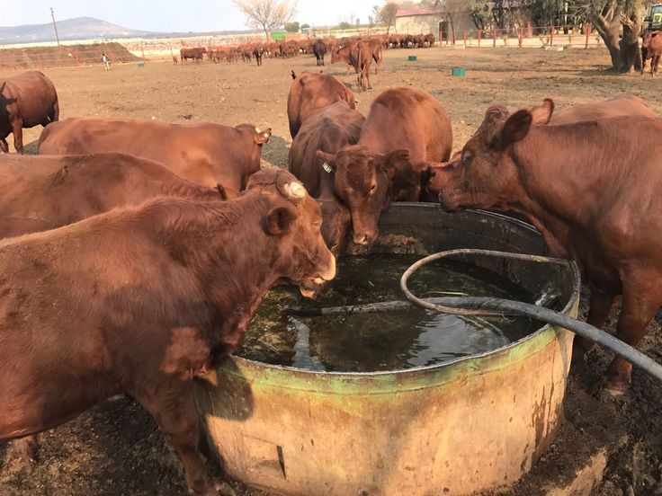
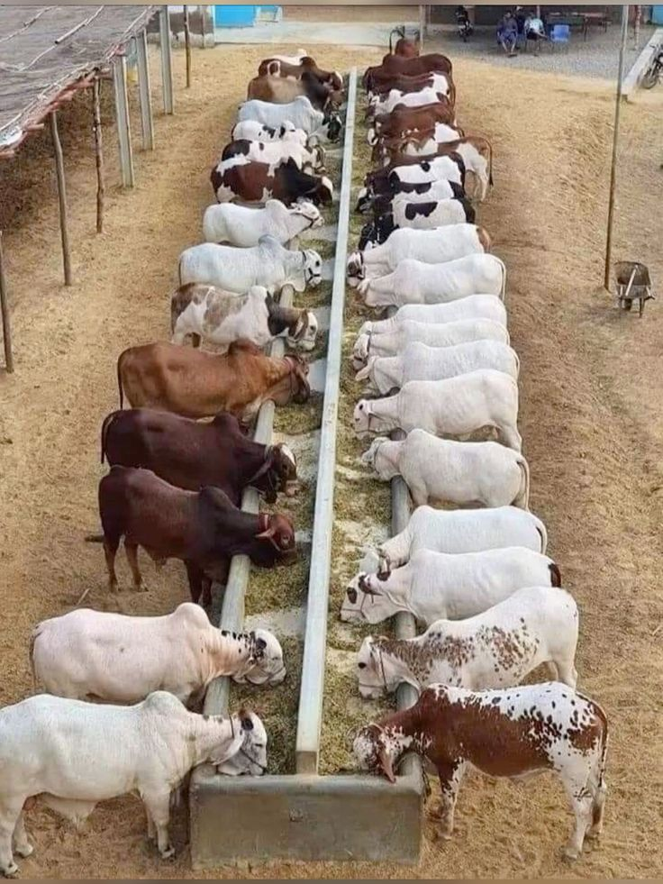
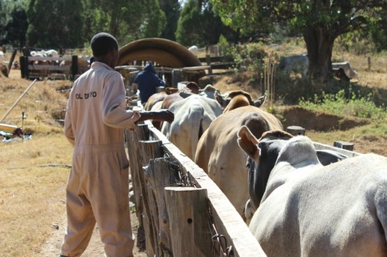
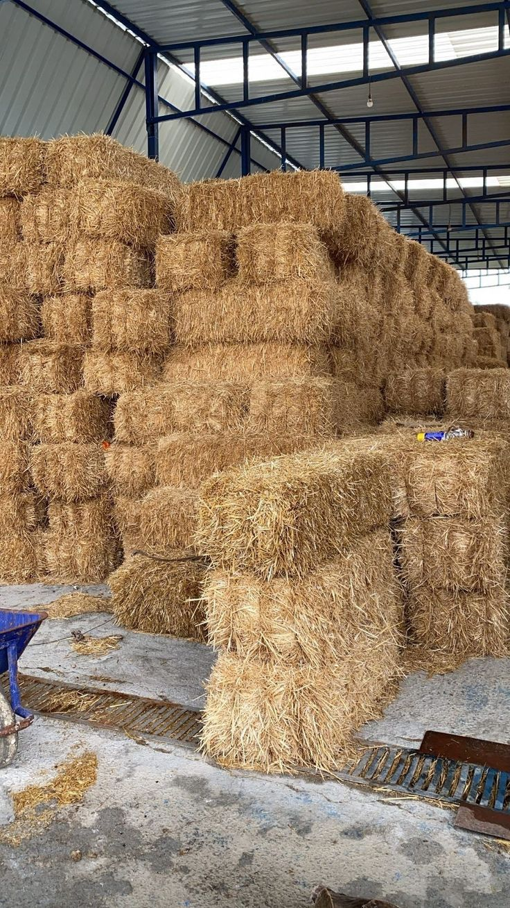
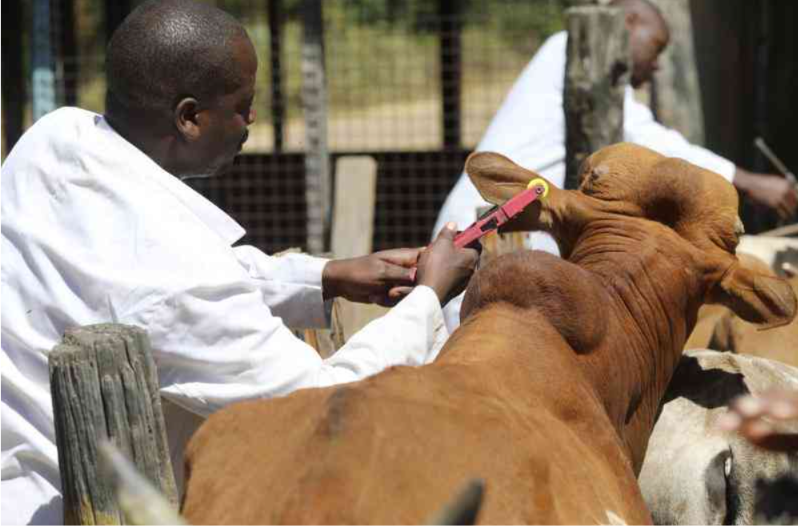
Dedicated people working together for healthy cattle and a well-run farm.
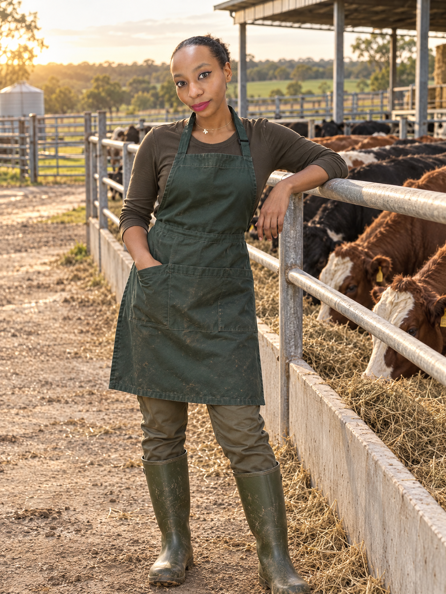
Leads daily operations, staff coordination, and farm productivity.
Oversees budgeting, financial planning, and reporting.
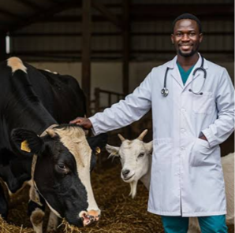
Guides animal healthcare, nutrition, feeding, and welfare.
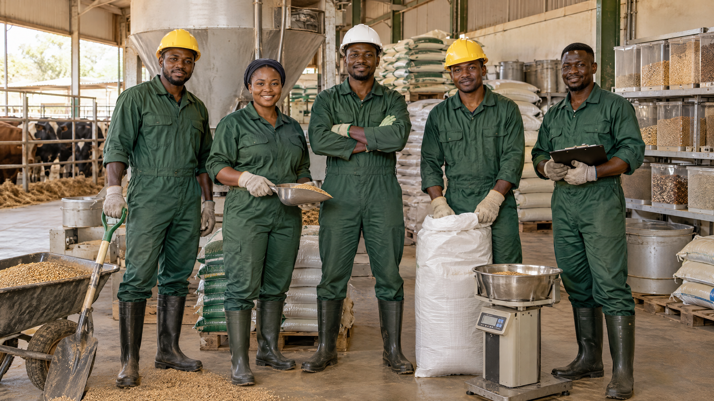
Produce quality feed to approved nutritional requirements.
Supports records, communication, scheduling, and office operations.
From one ambitious beginning to a growing, integrated cattle enterprise.
The beginning of our journey.
Cattle County Farm was established. We began bull fattening with a clear vision: to produce healthy, quality animals for a growing market.
More animals. More customers. Greater confidence.
We increased our number of bulls and began serving a wider network of buyers.
From our fields to our feedlots.
We expanded into fodder and hay production, improving feed availability while reducing reliance on external suppliers.
Better feed control. Better animal performance.
We introduced our own feed milling and preparation, enabling us to produce consistent, quality rations for our animals.
Creating room for greater capacity.
Our feedlot facilities were expanded to accommodate more animals and support increased production.
Growth creates opportunity.
As the farm expanded, we created more employment opportunities across animal care, feed production, operations, and administration.
Our cattle travelled further.
We strengthened our customer base and expanded our market reach through increased sales and stronger business relationships.
Growing efficiently. Farming responsibly.
Through improved feed management, increased sales, and expanded operations, Cattle County Farm continues to build a more profitable and sustainable future.
Every day on the farm is an opportunity to honor that promise.
We raise strong, healthy cattle through good care, quality feeding, and responsible farming—delivering dependable value to our customers and community.
Explore our cattle, farm facilities, and the everyday work behind quality care.
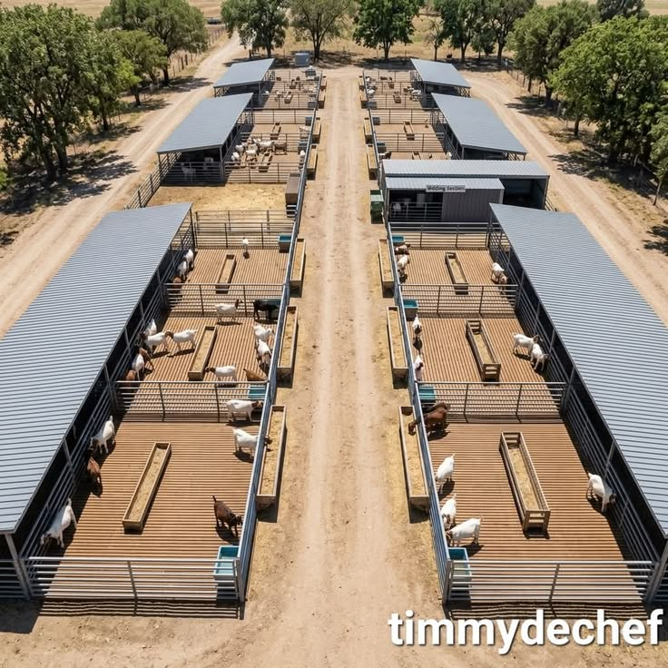
FACILITIES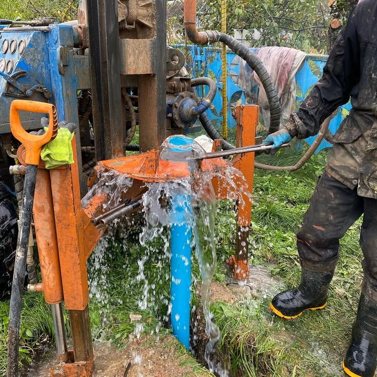
FACILITIES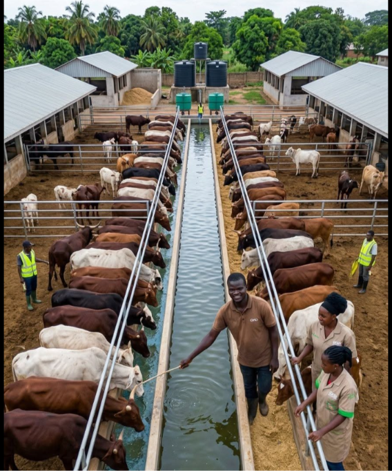
FACILITIES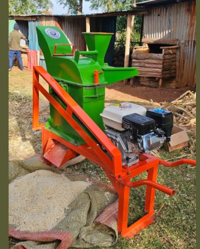
FACILITIES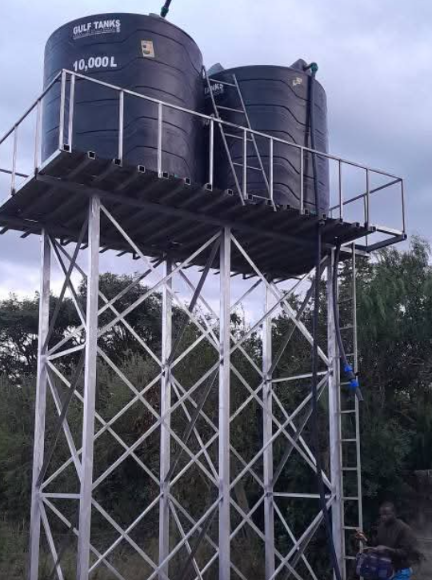
FACILITIES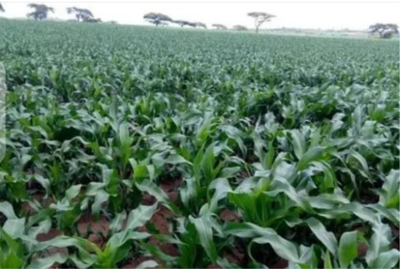
FARMS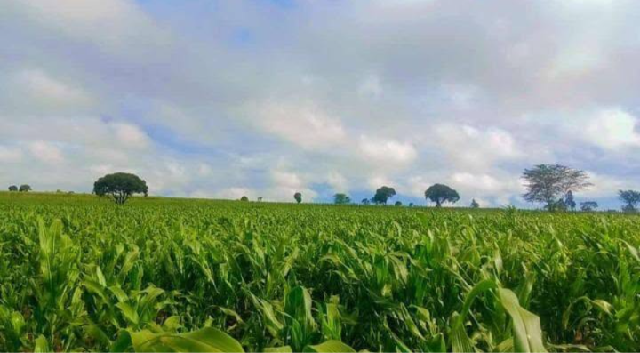
FARMS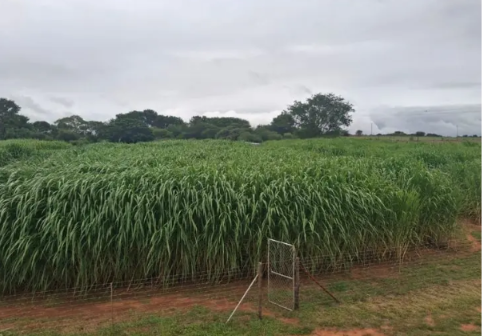
FARMS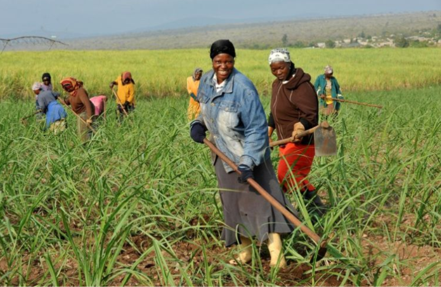
FARMS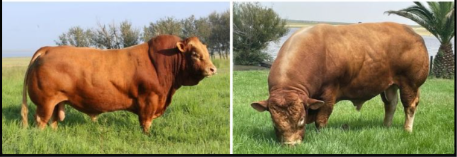
FARMSCommunity event photos will be added here soon.
We’d be glad to hear from you. Reach out to Cattle County Farm to start a conversation about our cattle.
CATTLE COUNTY FARM · KIAMBU COUNTY, KENYA